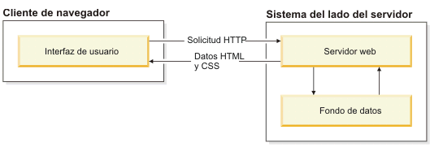
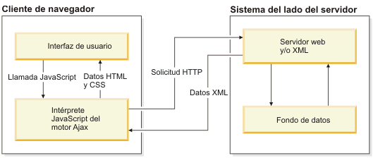

AJAX, acrónimo de Asynchronous JavaScript And XML, es una técnica de desarrollo web para crear aplicaciones web asíncronas. Estas aplicaciones se ejecutan en el cliente, es decir, en el navegador de los usuarios mientras se mantiene la comunicación asíncrona con el servidor en segundo plano.
Ajax (Asynchronous JavaScript and XML) se refiere a un grupo de tecnologías que se utilizan para desarrollar aplicaciones web. Al combinar estas tecnologías, las páginas web parece que son más receptivas puesto que los paquetes pequeños de datos se intercambian con el servidor y las páginas web no se vuelven a cargar cada vez que un usuario realiza un cambio de entrada. Ajax permite que un usuario de la aplicación web interactúe con una página web sin la interrupción que implica volver a cargar la página web. La interacción del sitio web ocurre rápidamente sólo con partes de la página de recarga y renovación.
Ajax se compone de las siguientes tecnologías:
Ajax incorpora estas tecnologías para crear un nuevo enfoque al desarrollo de aplicaciones web. Ajax define un método de iniciar un cliente con la comunicación del servidor sin recargas de páginas. Proporciona una forma de permitir actualizaciones de página parciales. Desde una perspectiva de usuario de página web, significa que la mejora de la interacción con una aplicación web, que proporciona al usuario más control de su entorno, es similar a la de una aplicación de escritorio.
En una aplicación web tradicional, las solicitudes HTTP, que se inician mediante la interacción del usuario con la interfaz web, se realizan a un servidor web. El servidor web procesa la solicitud y devuelve una página HTML al cliente. Durante el transporte HTTP, el usuario no puede interactuar con la aplicación web.
En una aplicación web Ajax, no se interrumpe el usuario en interacciones con la aplicación web. El motor de Ajax o el intérprete JavaScript permite que el usuario interactúe con la aplicación web independientemente del transporte HTTP procedente del servidor o que tenga el servidor como destino representando la interfaz y gestionando las comunicaciones con el servidor en nombre del usuario.
Aunque Ajax es una técnica de desarrollo de aplicaciones web que se ha diseñado para que las páginas web sean más receptivas e interactivas con un usuario, Ajax presenta algunas limitaciones a tener en cuenta antes de desarrollar una aplicación basada en Ajax. Las limitaciones siguientes representan algunas de las desventajas principales:
No todos los navegadores admiten JavaScript o el objeto XMLHttpRequest. Incluso entre navegadores que no ofrecen soporte a JavaScript y XMLHttpRequest, estos objetos se pueden tratar de forma diferente. Se deben tener en cuenta todas las implementaciones del navegador de Ajax.
No se resuelven todos los puntos de vista. Es necesario tener en cuenta los problemas relacionados con la seguridad y la privacidad de usuario a la hora de desarrollar una aplicación Ajax.
Puesto que no todos los navegadores disponen de soporte para JavaScript o el objeto XMLHttpRequest, debe asegurarse de proporcionar una manera de hacer que la aplicación web sea accesible para todos los usuarios.
Puesto que Ajax se utiliza para cargar bits de contenido de forma asíncrona en una página existente, es posible que parte de la información de la página no corresponda a una página recién cargada. Puede que el historial del navegador y los marcadores no se comporten de forma correcta porque el URL no se ha modificado aunque ciertas partes de la página se hayan cambiado.
No es posible realizar búsquedas en aplicaciones Ajax; sin embargo, sí se pueden utilizar las características y elementos de Ajax de una aplicación en la que se puedan realizar búsquelas.